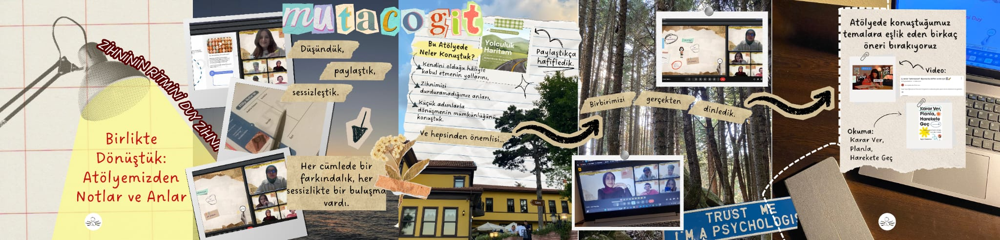

Zihninin Ritmini Duy
Atölye Hakkında
Kendini tanımak, çoğu zaman sosyal medyada bir “görev listesi” gibi anlatılır: yap, tamamla, geç… Oysa kendine yaklaşmak, bitirilmesi gereken bir iş değil; sabırla, bazen tökezleyerek, bazen de şaşırarak ilerlenen bir yolculuktur. 🌱
Bazen kendimize ulaşmak, başkalarına ulaşmaktan çok daha zor olur. Kimi zaman gölgelerimizle yüzleşmek, düşündüğümüzden daha fazla cesaret ister. Ama ya zayıf yanlarımız, bizi korkutan yönlerimiz, doğru bakış açısıyla ve çabayla süper gücümüz haline gelebilse?
Her yolculuğun bir ilk adımı vardır. Zihninin Ritmini Duy Atölyesi, işte o ilk adımı birlikte atabilmemiz için tasarlandı.
Bu atölyede bilimsel temelli egzersizler ve yaratıcı yöntemlerle;
- ✨ Kusurlarına farklı bir gözle bakmayı,
- ✨ Zayıf yanlarını keşfedip onları dönüştürmeyi,
- ✨ İçindeki kaynakları fark ederek potansiyelini ortaya çıkarmayı deneyimleyeceksin.
Bu süreçte yalnız olmayacaksın. Psikolog Rabia Yener ve Psikolog Esmanur Yüksek eşliğinde, güvenli ve destekleyici bir ortamda birbirimize yol arkadaşlığı yapacağız.
Atölye öncesinde seninle paylaşacağımız özel dokümanlar da adımlarını kolaylaştıracak bir pusula, bu yolculukta sana rehber olacak. 🧭
Kazanımlarımız
Öz Şefkatli Bakış Açısı: Kendini tanımayı bir yolculuk olarak görmek.
Zayıflıkları Güce Dönüştürme: Zayıf yanları analiz edip süper güce dönüştürmek.
Kusurlarla Barışma: Bilimsel egzersizlerle kusurları kabul etmek.
İçsel Kaynakların Keşfi: İçindeki potansiyeli yaratıcı yöntemlerle harekete geçirmek.
Kolektif Destek: Uzman rehberliğinde destekleyici bir ortamda yol arkadaşlığı deneyimi.
Kalıcı Rehberlik: Atölye sonrası için kullanılabilecek kişisel doküman ve rehber edinmek.
Program Akışı
Ritmi Fark Et
Zihnindeki karmaşayı ve sosyal medyanın "görev listesi" baskısından uzaklaşmak. Kendine yaklaşma yolculuğunda ilk adımı atma cesareti ve zihinsel bir duraklama alanı yaratmak.
Gölgelerle Tanış
"Kusur" olarak görülen özelliklerin ve davranışların derinlerine inmek. Detaylara takılma, mükemmeliyet arayışı ve bunların altındaki temel ihtiyaçları (güvende olma, değer görme) keşfet.
Pusulayı Oluştur
Bilimsel temelli egzersizlerle zayıf yanlara yeni bir bakış açısı geliştirmek. Atölye dokümanlarını bir rehber olarak kullanarak zihindeki katı kuralları esnetmek ve içsel kaynakları fark etmek.
Gücüne Dönüş
Kırılganlıklardan yeni bir güç doğurmak; kusurla savaşmayı bırakıp onu odaklı ve duyarlı bir "süper güce" dönüştürmek. Kendi ritmini bulmuş, kapsayıcı ve bütünleşmiş bir benlikle yolculuğu tamamlamak.
Tarih
9 Ekim 2025
Saat / Süre
Perşembe 20.30/ 2 saat
Lokasyon
Online (Google Meets)
Sadece 15 kişilik kontenjan ayrılmıştır.